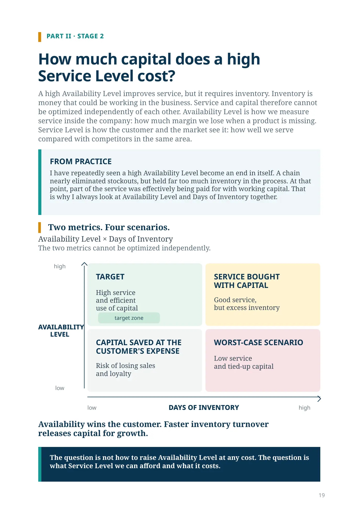
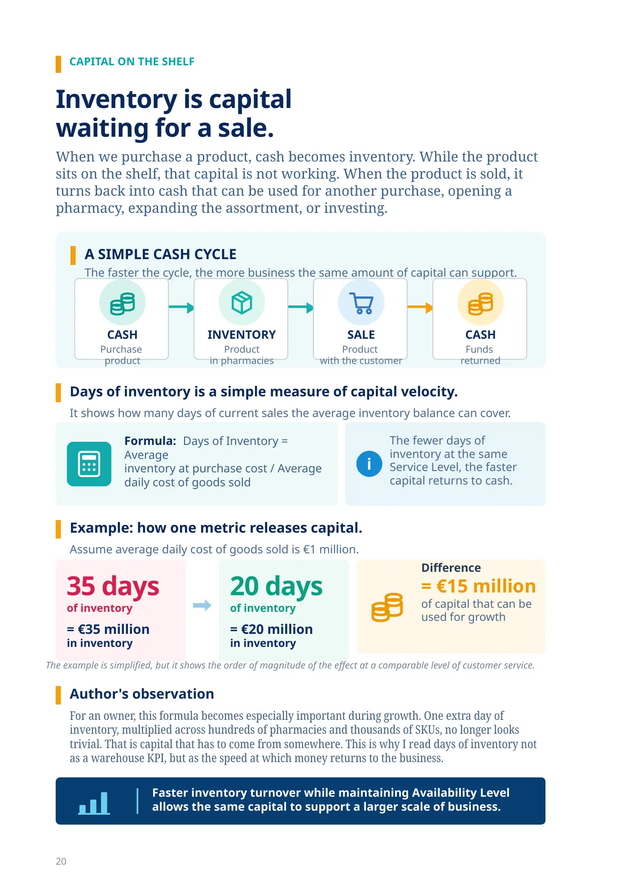
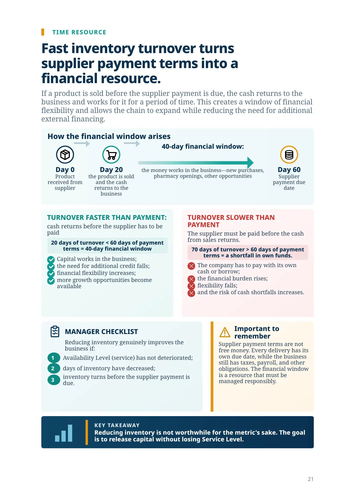
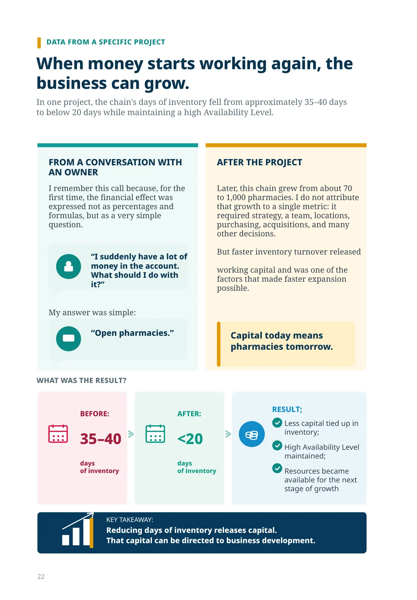
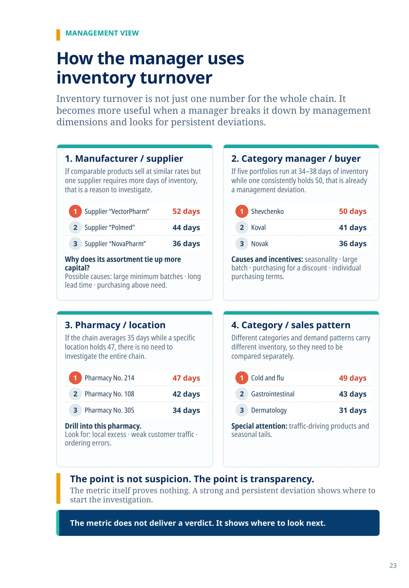
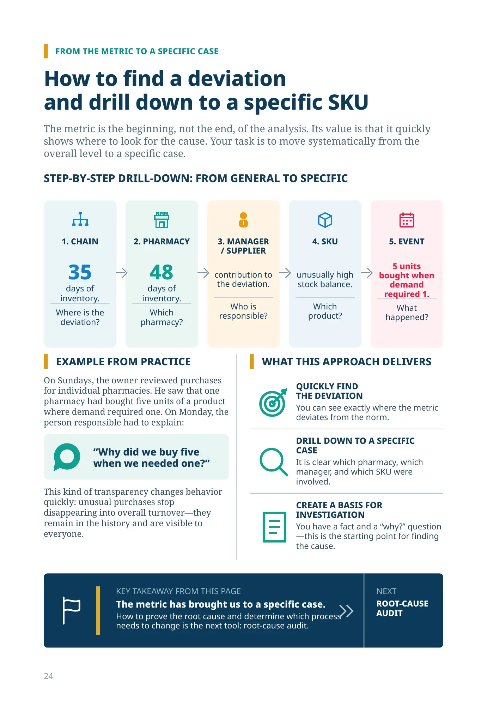
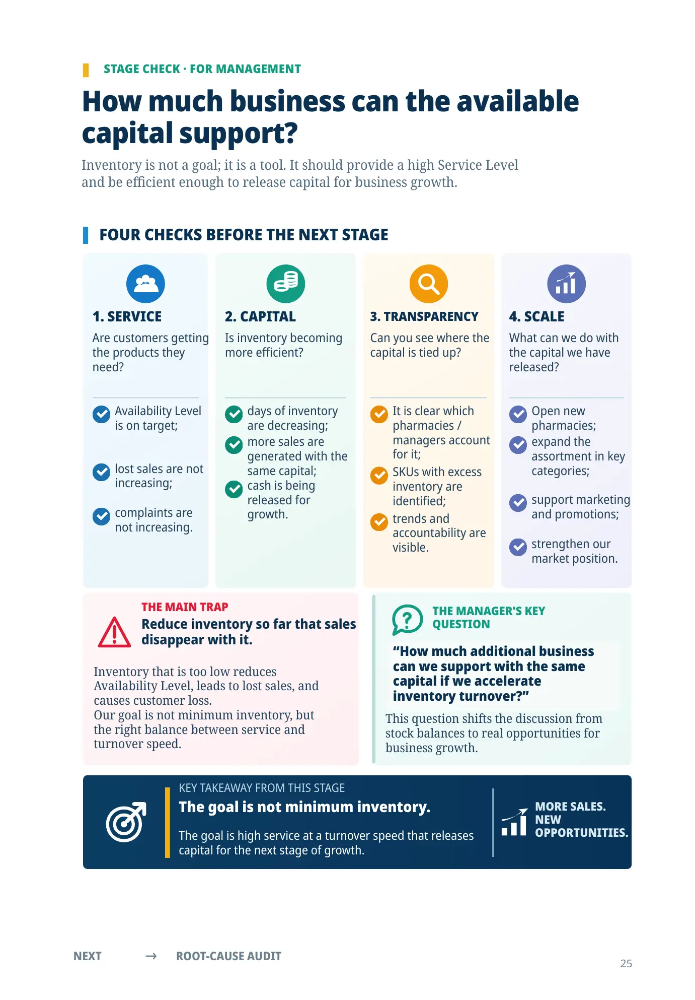
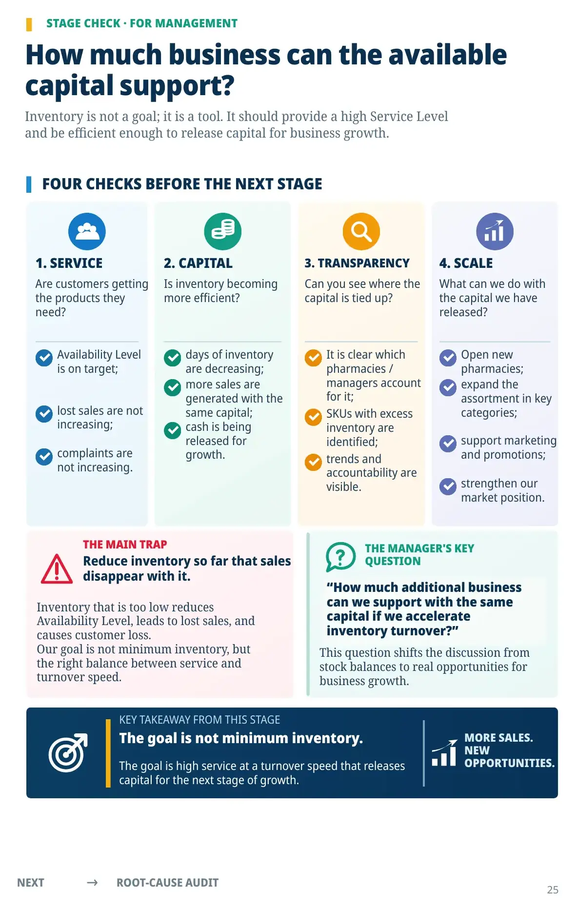

What does a high Availability Level cost?
PART II · STAGE 2
How much capital does a high
Service Level cost?
A high Availability Level improves service, but it requires inventory. Inventory is money that could be working in the business. Service and capital therefore cannot be optimized independently of each other. Availability Level is how we measure service inside the company: how much margin we lose when a product is missing. Service Level is how the customer and the market see it: how well we serve compared with competitors in the same area.
FROM PRACTICE
I have repeatedly seen a high Availability Level become an end in itself. A chain nearly eliminated stockouts, but held far too much inventory in the process. At that point, part of the service was effectively being paid for with working capital. That is why I always look at Availability Level and Days of Inventory together.
Two metrics. Four scenarios.
Availability Level × Days of Inventory
The two metrics cannot be optimized independently.AVAILABILITY
LEVEL
LEVEL
high
low
TARGET
High service
and efficient
use of capital
SERVICE BOUGHT
WITH CAPITAL
Good service,
but excess inventory
CAPITAL SAVED AT THE
CUSTOMER'S EXPENSE
Risk of losing sales
and loyalty
WORST-CASE SCENARIO
Low service
and tied-up capital
low
DAYS OF INVENTORY
high
Availability wins the customer. Faster inventory turnover
releases capital for growth.
The question is not how to raise Availability Level at any cost. The question is what Service Level we can afford and what it costs.
CAPITAL ON THE SHELF
Inventory is capital
waiting for a sale.
When we purchase a product, cash becomes inventory. While the product sits on the shelf, that capital is not working. When the product is sold, it turns back into cash that can be used for another purchase, opening a pharmacy, expanding the assortment, or investing.
A SIMPLE CASH CYCLE
The faster the cycle, the more business the same amount of capital can support.
CASHPurchase
product
product
INVENTORYProduct
in pharmacies
in pharmacies
SALEProduct
with the customer
with the customer
CASHFunds
returned
returned
Days of inventory is a simple measure of capital velocity.
It shows how many days of current sales the average inventory balance can cover.
Formula: Days of Inventory = Average
inventory at purchase cost / Average daily cost of goods sold
inventory at purchase cost / Average daily cost of goods sold
The fewer days of inventory at the same Service Level, the faster capital returns to cash.
Example: how one metric releases capital.
Assume average daily cost of goods sold is €1 million.
35 days
of inventory
= €35 million
in inventory
20 days
of inventory
= €20 million
in inventory
Difference= €15 millionof capital that can be used for growth
The example is simplified, but it shows the order of magnitude of the effect at a comparable level of customer service.
Author's observation
For an owner, this formula becomes especially important during growth. One extra day of inventory, multiplied across hundreds of pharmacies and thousands of SKUs, no longer looks trivial. That is capital that has to come from somewhere. This is why I read days of inventory not as a warehouse KPI, but as the speed at which money returns to the business.
TIME RESOURCE
Fast inventory turnover turns supplier payment terms into a financial resource.
If a product is sold before the supplier payment is due, the cash returns to the business and works for it for a period of time. This creates a window of financial flexibility and allows the chain to expand while reducing the need for additional external financing.
How the financial window arises
Day 0
Day 60
TURNOVER SLOWER THAN PAYMENT
The supplier must be paid before the cash from sales returns. 70 days of turnover > 60 days of payment terms = a shortfall in own funds. The company has to pay with its own cash or borrow; the financial burden rises; flexibility falls; and the risk of cash shortfalls increases.
MANAGER CHECKLIST
Reducing inventory genuinely improves the business if: 1 Availability Level (service) has not deteriorated; 2 days of inventory have decreased; 3 inventory turns before the supplier payment is due.
Important to remember
Supplier payment terms are not free money. Every delivery has its own due date, while the business still has taxes, payroll, and other obligations. The financial window is a resource that must be managed responsibly.
KEY TAKEAWAY
Reducing inventory is not worthwhile for the metric's sake. The goal is to release capital without losing Service Level.
DATA FROM A SPECIFIC PROJECT
When money starts working again, the
business can grow.
In one project, the chain's days of inventory fell from approximately 35–40 days
to below 20 days while maintaining a high Availability Level.
BEFORE: 35–40 days
of inventory
FROM A CONVERSATION WITH
AN OWNER
I remember this call because, for the
first time, the financial effect was
expressed not as percentages and
formulas, but as a very simple
question.
“I suddenly have a lot of
money in the account.
What should I do with
it?”
“Open pharmacies.”
AFTER THE PROJECT
Later, this chain grew from about 70
to 1,000 pharmacies. I do not attribute
that growth to a single metric: it
required strategy, a team, locations,
purchasing, acquisitions, and many
other decisions.
But faster inventory turnover released
working capital and was one of the
factors that made faster expansion
possible.
Capital today means
pharmacies tomorrow.
WHAT WAS THE RESULT?
AFTER: <20 days
of inventory
RESULT; Less capital tied up in
inventory; High Availability Level
maintained; Resources became
available for the next
stage of growth
KEY TAKEAWAY: Reducing days of inventory releases capital.
That capital can be directed to business development.
MANAGEMENT VIEW
How the manager uses
inventory turnover
Inventory turnover is not just one number for the whole chain. It becomes more useful when a manager breaks it down by management dimensions and looks for persistent deviations.
1. Manufacturer / supplier
If comparable products sell at similar rates but one supplier requires more days of inventory, that is a reason to investigate.
1Supplier “VectorPharm”52 days
2Supplier “Polmed”44 days
3Supplier “NovaPharm”36 days
Why does its assortment tie up more capital?
Possible causes: large minimum batches · long lead time · purchasing above need.
2. Category manager / buyer
If five portfolios run at 34–38 days of inventory while one consistently holds 50, that is already a management deviation.
1Shevchenko50 days
2Koval41 days
3Novak36 days
Causes and incentives: seasonality · large batch · purchasing for a discount · individual purchasing terms.
3. Pharmacy / location
If the chain averages 35 days while a specific location holds 47, there is no need to investigate the entire chain.
1Pharmacy No. 21447 days
2Pharmacy No. 10842 days
3Pharmacy No. 30534 days
Drill into this pharmacy.
Look for: local excess · weak customer traffic · ordering errors.
4. Category / sales pattern
Different categories and demand patterns carry different inventory, so they need to be compared separately.
1Cold and flu49 days
2Gastrointestinal43 days
3Dermatology31 days
Special attention: traffic-driving products and seasonal tails.
The point is not suspicion. The point is transparency.
The metric itself proves nothing. A strong and persistent deviation shows where to start the investigation.
FROM THE METRIC TO A SPECIFIC CASE
How to find a deviation
and drill down to a specific SKU
The metric is the beginning, not the end, of the analysis. Its value is that it quickly shows where to look for the cause. Your task is to move systematically from the overall level to a specific case.
STEP-BY-STEP DRILL-DOWN: FROM GENERAL TO SPECIFIC
1. CHAIN
35days of inventory.
Where is the deviation?
2. PHARMACY
48days of inventory.
Which pharmacy?
3. MANAGER
/ SUPPLIER
/ SUPPLIER
contribution to the deviation.
Who is responsible?
4. SKU
unusually high stock balance.
Which product?
5. EVENT
5 units bought when demand required 1.
What happened?
EXAMPLE FROM PRACTICE
On Sundays, the owner reviewed purchases for individual pharmacies. He saw that one pharmacy had bought five units of a product where demand required one. On Monday, the person responsible had to explain:
“Why did we buy five when we needed one?”
This kind of transparency changes behavior quickly: unusual purchases stop disappearing into overall turnover—they remain in the history and are visible to everyone.
WHAT THIS APPROACH DELIVERS
QUICKLY FIND
THE DEVIATION
You can see exactly where the metric deviates from the norm.
DRILL DOWN TO A SPECIFIC
CASE
It is clear which pharmacy, which manager, and which SKU were involved.
CREATE A BASIS FOR
INVESTIGATION
You have a fact and a “why?” question—this is the starting point for finding the cause.
Inventory turnover carries another cost as well
If the company later automates physical storage, excess days of inventory require more than additional working capital. They also require additional automated capacity and the floor space to accommodate it.
With the same sales, assortment, and target Availability Level, 60 days of inventory means roughly 1.5 times as much product volume as 40 days. The exact system size depends on packaging and throughput, but the management conclusion remains the same: good inventory turnover can reduce future capital expenditure on physical automation.

STAGE CHECK · FOR MANAGEMENT
How much business can the available
capital support?
Inventory is not a goal; it is a tool. It should provide a high Service Level
and be efficient enough to release capital for business growth.
FOUR CHECKS BEFORE THE NEXT STAGE
1. SERVICE
Are customers getting the products they need? Availability Level is on target; lost sales are not increasing; complaints are not increasing.
2. CAPITAL
Is inventory becoming more efficient? days of inventory are decreasing; more sales are generated with the same capital; cash is being released for growth.
3. TRANSPARENCY
Can you see where the capital is tied up? It is clear which pharmacies / managers account for it; SKUs with excess inventory are identified; trends and accountability are visible.
4. SCALE
What can we do with the capital we have released? Open new pharmacies; expand the assortment in key categories; support marketing and promotions; strengthen our market position.
THE MAIN TRAP
Reduce inventory so far that sales
disappear with it.
Inventory that is too low reduces
Availability Level, leads to lost sales, and
causes customer loss.
Our goal is not minimum inventory, but
the right balance between service and
turnover speed.
THE MANAGER'S KEY
QUESTION
“How much additional business
can we support with the same
capital if we accelerate
inventory turnover?”
This question shifts the discussion from
stock balances to real opportunities for
business growth.
KEY TAKEAWAY FROM THIS STAGE
The goal is not minimum inventory. The goal is high service at a turnover speed that releases capital for the next stage of growth. MORE SALES.
NEW
OPPORTUNITIES.
NEXT → ROOT-CAUSE AUDIT